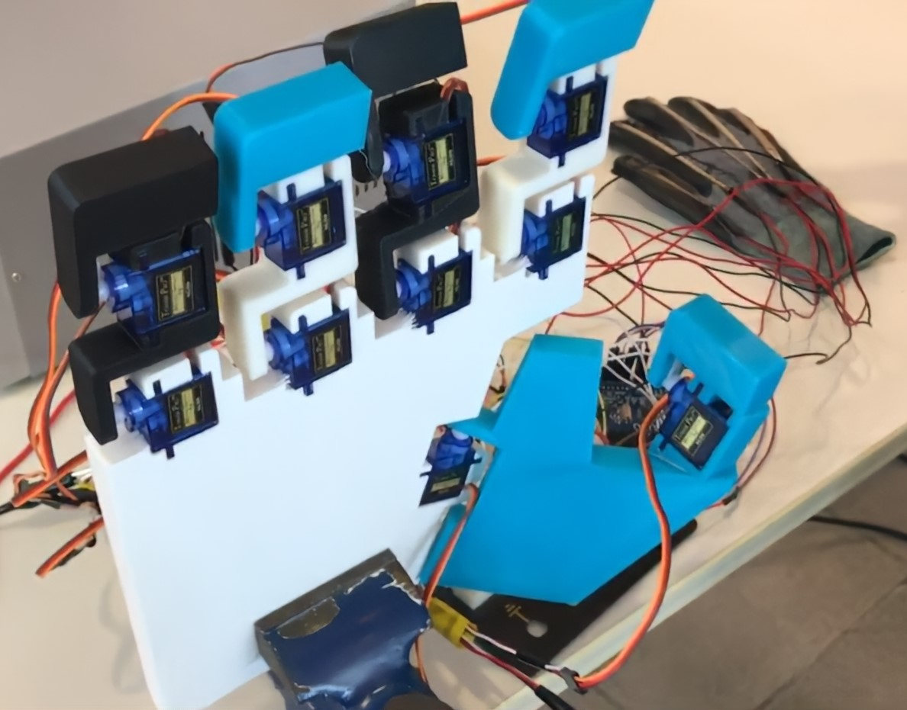

|
Dohyeok Lee I'm a first year Ph.D. student at SNU CML, advised by Jungwoo Lee. At Google I've worked on Glass, Lens Blur, HDR+, VR, Portrait Mode, Portrait Light, and Maps. I did my PhD at UC Berkeley, where I was advised by Jitendra Malik. I've received the PAMI Young Researcher Award. |

|
ResearchI'm interested in computer vision, deep learning, generative AI, and image processing. Most of my research is about inferring the physical world (shape, motion, color, light, etc) from images, usually with radiance fields. Some papers are highlighted. |
 |
Current Research Interest
TBD. |
|
|
SPQR
Dohyeok Lee, Seungyub Han, Taehyun Cho, Jungwoo Lee NeurIPS, 2023 arXiv / code TBD. |

|
ARTE
Yejin Kim, Dohyeok Lee CVPR Demo, 2023 (Best Demo Awarded) code TBD. |
 |
Control of Furuta Pendulum with Reinforcement Learning
Dohyeok Lee, Usama Mohammad, Dong Eui Chang ICCAS, 2019 video TBD. |
Selected ProjectO: ,, . |

|
[R] 3D pose estimation
Research Project working with RCV KAIST Developing 3D pose estimation algorithm for hubo picking challenge |
|
|
[O] Nonlinear Controller
Open Source Contribution, 19 stars code Implement nonlinear control (robust, adaptive, sliding mode) algorithms on two-arm manipulator simulator |
|
|
[O] IMPALA
Open Source Contribution code Implement IMPALA(Scalable Distributed Deep-RL with Importance Weighted Actor-Learner Architectures) in distributed machine system with ray, redis, UDP |
|
|
[O] EKF
Open Source Contribution code Implement aa |
|
|
[O] RRT
Open Source Contribution code Implement aa |
ExperienceTBD. |
|
|
[DC] Separated batch ensemble DQN
Dohyeok Lee, Jungwoo Lee KICS Winter Conference, 2023 code TBD. |

|
[DC] Minimum distorsion
Taehyun Cho, Dohyeok Lee, Jungwoo Lee KICS Winter Conference, 2023 code TBD. |

|
[DC] 2D Simulator Implementation for Surveillance/Reconnaissance Reinforcement Learning Algorithms
Changsik Lee, Dohyeok Lee, Dong Eui Chang KIMST Conference, 2020 TBD. |
Robotics ProjectTBD. |

|
Mobile Humanoid
Project working with SNU Graduated Course, Actuation and Sensing Mechanisms for Robots Responsobility: Developmenting |

|
autonomous mobile robot
Personal Project working with robotics club MR, KAIST TBD. |
|  |
dex. teleop
Personal Project working with robotics club MR, KAIST TBD. |

|
Marker Robot
Personal Project working with robotics club MR, KAIST TBD. |
Work ExperienceTBD. |
|
Robotics Engineer
D.Hive(start-up), Daejeon, Korea 2020.09 - 2021.04 Developing autonomous delivery robot -Developing: driving controller module, sensor noise filtering system -Managing: development of mobile robot hardware platform, sensor system, sensor fusion system, planning module, segmentation module |
|
|
Robotics Engineer Intern
Crazing Lab(start-up), Pangyo, Korea 2019.06 - 2019.08 Developing autonomous filming robot -Mobile robot platform: hardware(frame,battery system), BLDC motor control system, UART communication system -ROS system for motor control, IMU, LiDAR, and depth camera data processing |
Miscellanea |
|
Reviewer: CoRL 2024 W, ITW 2024 |
|
Academic Service |
Reviewer: CoRL 2024 W, ITW 2024 |
|
template adapted from source code. |